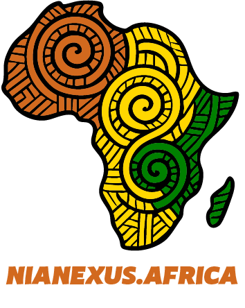
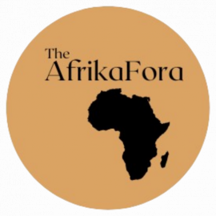
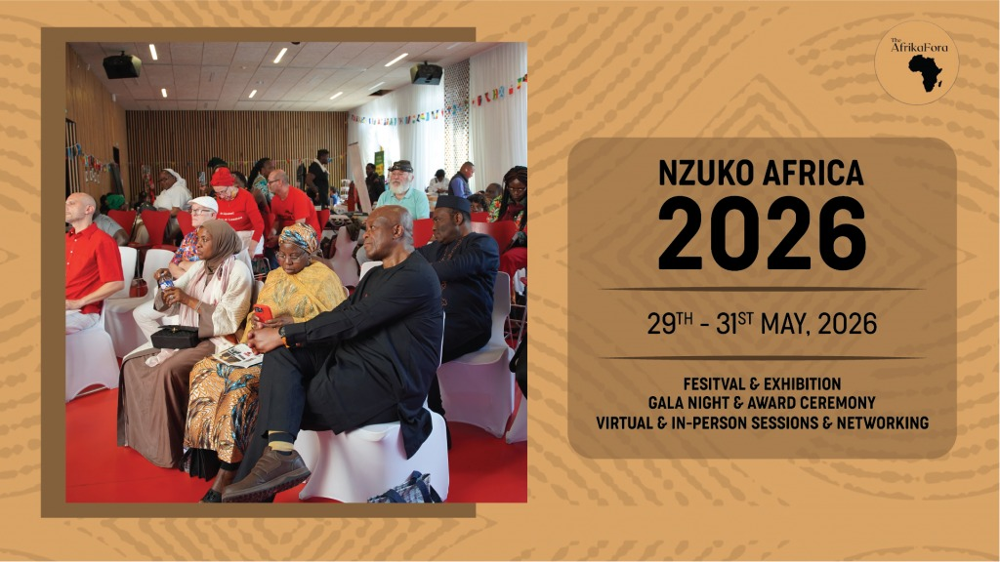
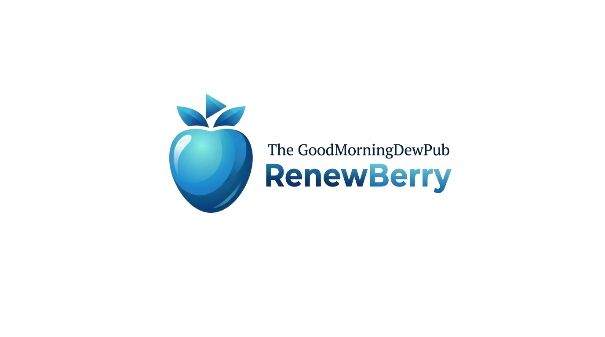
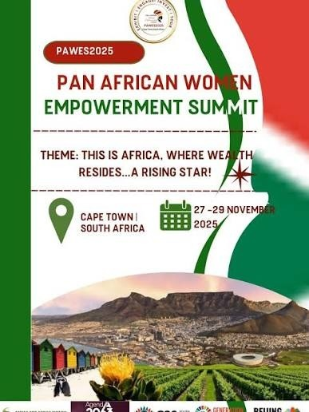
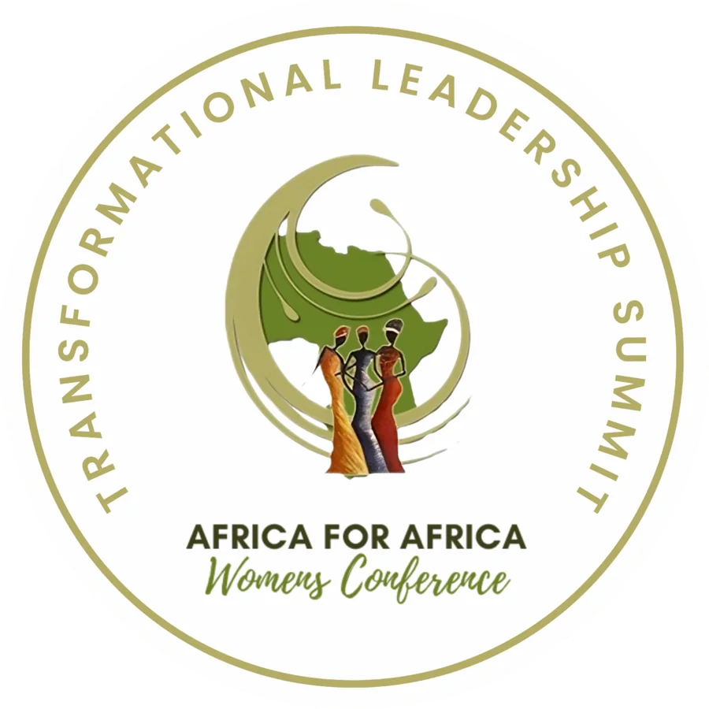

Insight
Cultural fluency with global standards.
We connect African talent, events, and stories with the platforms they need to grow.
Our Genesis
Africa has exceptional talent and ideas. NJC Global brings the people, story, and execution together so that potential can become visible, measurable impact.
Cultural fluency with global standards.
Reliable delivery across every touchpoint.
Stories that make valuable work easier to trust.
Relevant people, platforms, and opportunities.
The Nexus
Curating the narrative of African excellence.
Orchestrating high-impact global gatherings.
Sourcing and managing visionary leaders.
Leadership
Joyce Chiamaka Nwezeh built NJC Global to help African talent and ideas reach the global stage.
Her cross-market experience shapes the firm's focused approach to visibility, talent, and events.
Connect on LinkedInTo turn African talent and stories into visible, measurable impact.
A world where Pan-African ambition meets global opportunity.
Partners & Past Clients
Current partners and organizations whose work NJC Global has supported.

Culture & commerce · ? 01A home for African stories, culture, and commerce.
Connecting Zimbabwean businesswomen across borders.

Culture & trade · ? 03Connecting African culture, trade, and diaspora communities.

Culture festival · ? 04A celebration of African heritage, art, and corporate connections in Paris.

Digital media · 05A platform for premium creator-led video.

Media partnership · 06Pan-African Women Empowerment Summit and Awards.

Past client · Women empowermentAdvancing women's leadership and economic opportunity.
Culture, stories, and African commerce
Nia Nexus Africa (nianexus.africa) is a digital resource hub and cultural platform founded by Houston-based entrepreneur Jimi Obawole. Positioned as "The Diaspora's Digital Crossroads," Nia Nexus was built to connect, educate, and inspire audiences around the world on all things Africa. Rather than treating African heritage as a distant relic, the platform bridges the continent and the global diaspora, spotlighting the history, commerce, literature, fashion, and everyday innovations that link African roots to modern diaspora life.
Women in business and leadership
Commonwealth Businesswomen Africa (CBW-Africa) Zimbabwe Chapter is a non-profit organization and national chapter of the wider continental CBW-Africa network, led by Country Head Angeline Mhlanga. The chapter officially launched its local operations in July 2025 after a year of running virtually. Its core mission is to equip women entrepreneurs and professionals with mentorship, training, digital inclusion, corporate communication skills, and cross-border business development opportunities, helping them build sustainable legacies while tapping into Pan-African and global networks.
Culture, trade, and diaspora engagement
The AfrikaFora (formerly known as AfricaFora) is a France-based pan-African organization founded and led by Winifred Uloaku Gaillard, an experienced events curator, intercultural life coach, 2023 Voice Achievers Cultural Award winner, and inaugural member of the ONE Campaign Ubuntu Circle in France. Dedicated to reshaping global narratives around Africa and its diaspora, the organization specializes in promoting African cultural, economic, and creative values worldwide. Its core mission is to showcase African culture and enterprise, boost intra-African trade and collaboration, and champion the continent's human and natural resources toward an independent, self-reliant, and peaceful Africa.
Culture festival
Nzuko Africa Festival 2026 brought African heritage, art, and networking to Paris, gathering thought leaders and creatives for a powerful physical hub of cultural exchange and corporate connections.
Premium digital entertainment
RenewBerry (renewberry.io) is a digital media and creator platform focused on meaningful media, community connection, and premium digital content. Founded by Abongwa Celestin and built around the motto "Believe. Begin. Become," the platform enables creators and brands to share curated video content, publish articles, and build authentic, trust-driven relationships with their audiences. Rather than chasing empty noise, RenewBerry champions human-centered storytelling, helping brands and creators move beyond generic broadcasting to spark honest, lasting conversations with their communities.
Pan-African Women Empowerment Summit and Awards
PAWES 2025 was a premier high-profile gathering dedicated to celebrating female leadership, recognizing extraordinary achievements, and fostering empowerment across diverse sectors on the continent. Held by Dr Bea Hackula.
Leadership and economic empowerment
Africa for Africa Women Empowerment (AFAW) is a South Africa-based pan-African movement founded and led by Bea Hackula, a transformational leader, mentor, founder of Assert Media (Assertive Women Magazine), and author of Arise: Be The Leader You Were Meant To Be. Built around the ethos of "Lifting as You Rise," the organization is dedicated to empowering women and youth across Africa through leadership development, mentorship, education, and community-building initiatives. Its work actively advances the African Union's Agenda 2063 and the UN Sustainable Development Goals (particularly SDG 5 on gender equality) by expanding women's participation in business, governance, and economic decision-making.
We combine strategy, storytelling, specialist knowledge, and trusted audiences to build work that travels beyond borders.
Our people
Joyce leads a focused team supported by trusted partners.
Let's bring your next Pan-African initiative into focus.
Initiate Collaboration